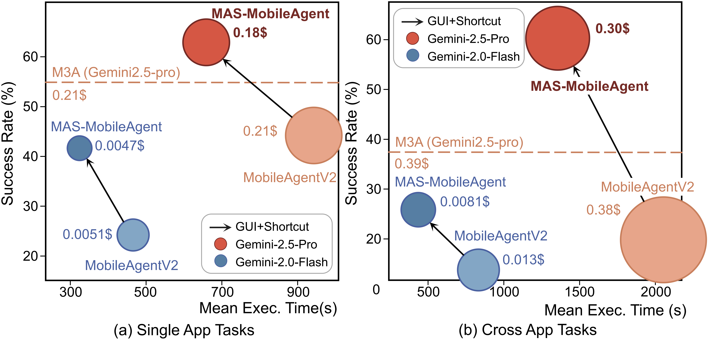
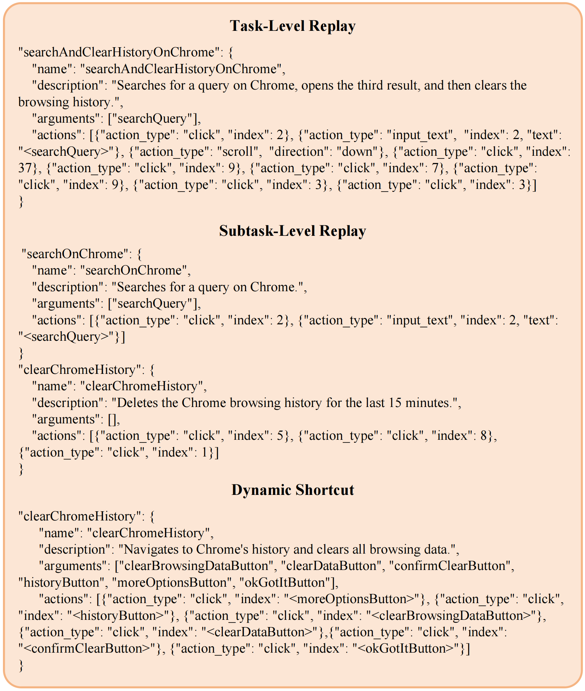
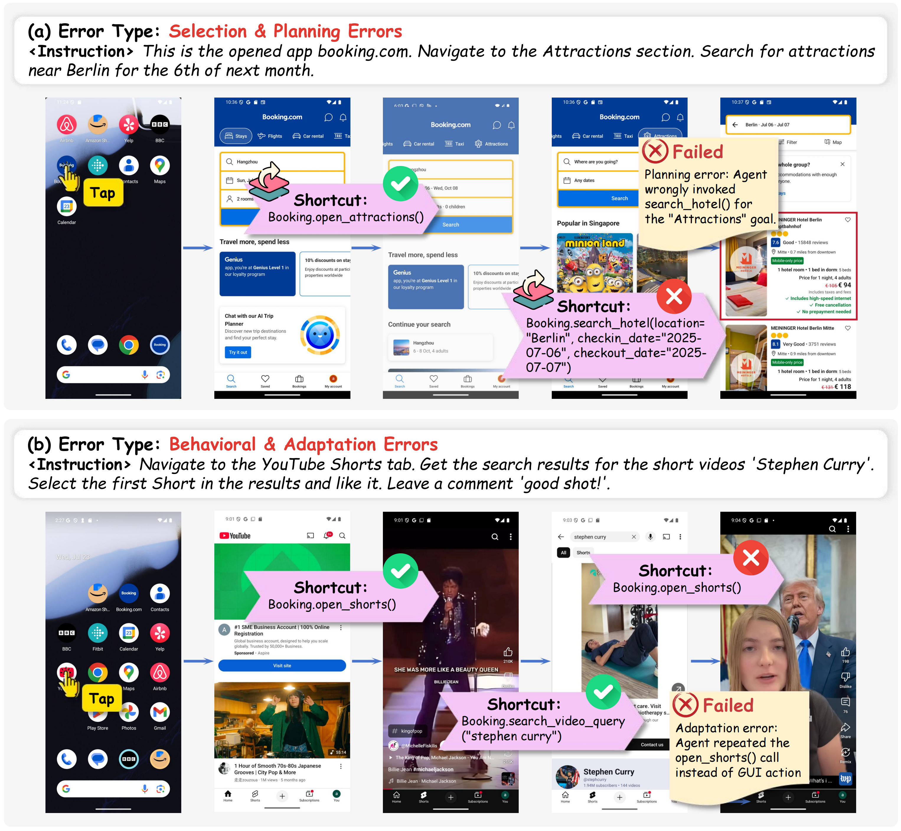

Our experiments show that hybrid agents evaluated on MAS-Bench achieve significantly higher success
rates and reduced interaction costs compared to GUI-only agents. Detailed quantitative comparisons and
ablations are provided below.
| Agent |
Input |
SR ↑ |
Efficiency |
Cost |
GSAR ↑ |
| SS |
VH |
MSRS ↓ |
MET ↓ |
MToC ↓ |
MSC ↑ |
| Single-app Tasks (92 Tasks) |
| Human |
✓ |
|
- |
1.000 |
- |
- |
- |
- |
| T3A |
|
✓ |
0.511 |
1.056 |
137.641 |
346.382 |
0 |
0 |
| M3A |
✓ |
✓ |
0.565 |
1.064 |
192.775 |
155.281 |
0 |
0 |
| MobileAgentV2 |
✓ |
|
0.446 |
1.058 |
1013.386 |
120.212 |
0 |
0 |
| MobileAgent-E |
✓ |
|
0.359 |
0.818 |
459.574 |
88.772 |
0.378 |
0.081 |
| MAS-T3A (Ours) |
|
✓ |
0.576 |
0.915 |
129.279 |
291.391 |
1.043 |
0.117 |
| MAS-MobileAgent (Ours) |
✓ |
|
0.641 |
0.613 |
682.547 |
99.780 |
1.348 |
0.345 |
| Cross-app Tasks (47 Tasks) |
| Human |
✓ |
|
- |
1.000 |
- |
- |
- |
- |
| T3A |
|
✓ |
0.340 |
1.087 |
257.122 |
625.970 |
0 |
0 |
| M3A |
✓ |
✓ |
0.383 |
1.262 |
411.145 |
288.833 |
0 |
0 |
| MobileAgentV2 |
✓ |
|
0.170 |
1.247 |
2053.133 |
227.128 |
0 |
0 |
| MobileAgent-E |
✓ |
|
0.064 |
0.934 |
469.109 |
85.859 |
2.250 |
0.177 |
| MAS-T3A (Ours) |
|
✓ |
0.511 |
0.643 |
185.911 |
440.222 |
2.213 |
0.185 |
| MAS-MobileAgent (Ours) |
✓ |
|
0.617 |
0.829 |
1441.586 |
189.836 |
3.128 |
0.320 |
Table: Performance comparison of our MAS agents and baseline
methods on MAS-Bench with a predefined shortcuts knowledge base. All agents utilize the
Gemini-1.5-Pro. SS and VH refer to the Screenshot and View Hierarchy (UI Tree) input modalities. MSRS
is the Mean Step Ratio on Successful tasks, MET is the Mean Execution Time in seconds, and MToC is the
Mean Token Cost in thousands (kTokens). The SSR for the predefined shortcuts is 1.0.

Figure: Performance comparison of MAS-MobileAgent with and without
shortcuts. The base models are Gemini-2.5-Pro and Gemini-2.0-Flash. Data points show the
relationship between SR and MET for single-app and cross-app tasks, with circle size representing mean
cost. Results demonstrate that shortcuts benefit both models, with more significant improvements for
the weaker Gemini-2.0-Flash.

Figure: Examples of the resulting shortcut types. Action Replay shortcuts (Task-Level and Subtask-Level) use a sequence of actions with fixed indices, while Dynamic Shortcuts use variable arguments that correspond to UI elements.
| Shortcut |
SR ↑ |
SSR ↑ |
MSRS ↓ |
MSC ↑ |
MET ↓ |
| Human |
- |
- |
1.00 |
- |
- |
| Baseline |
0.43 |
- |
0.96 |
- |
188.93 |
| SPredefined |
0.52 |
1.00 |
0.71 |
1.45 |
152.15 |
| SReplay-Task |
0.34 |
0.10 |
0.91 |
3.04 |
244.61 |
| SReplay-Subtask |
0.43 |
0.73 |
1.13 |
1.22 |
236.67 |
| SDynamic |
0.38 |
0.75 |
0.82 |
0.91 |
216.24 |
| SMobileAgent-E |
0.49 |
0.71 |
1.00 |
1.01 |
224.87 |
Table: The results of different shortcut generation methods.
Column definitions: SR (success rate), MSRS (Mean Step Ratio on Successful tasks), MSC (Mean Shortcut
Call Count), SSR (Shortcut Success Rate), MET (Mean Execution Time).

Figure: Failure cases for shortcut generation. This figure illustrates common failure modes, including (a) incorrect tool selection, (b) improper parameter grounding, and (c) catastrophic forgetting, which hinder the agent's ability to create robust and reliable shortcuts.